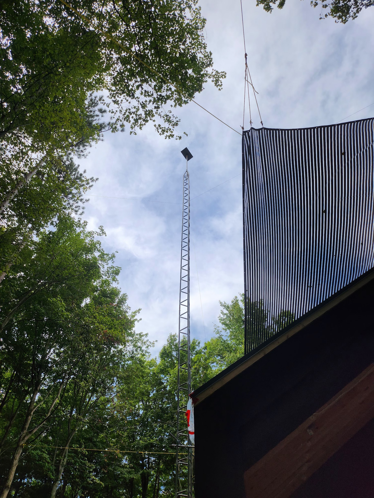
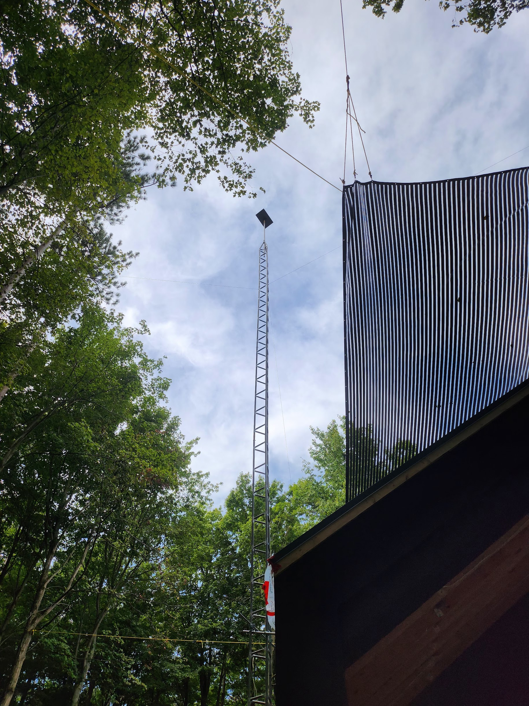

- Bracebridge
- Bala
- Collingwood
- Gravenhurst
- Honey Harbour
- Kilworthy
- MacTier
- Midland
- Port Carling
- Port Severn
- Torrance
- Parry Sound
- Pointe au Baril
- Severn Bridge
- Baysville
- Burks Falls
- Dorset
- Dunchurch
- Dwight
- Haliburton
- Kearney
- Magnetawan
- Minden
- Riley Lake
- Seabright
- South River
- Sundridge
- Washago
- Haliburton Highlands
- Missisauga
- Morrison Lake
- Niagara on-the-Lake
- Orillia
- Oro/Medonte
- Ottawa
- Ramara
- Toronto
- Bruce County
- Dufferin County
- Grey County
- Simcoe County
Quality work, done with pride.

50ft Tower
This deep-woods property faced heavy tree obstructions. Ontario Starlink resolved the issue by installing a 50-foot tower, perfectly positioned to capture a strong signal and ensure reliable coverage throughout the property.
J-Arm Installation
For this beautiful lakeside property, our team conducted site surveys and determined that a simple J-arm installation would provide a fast, reliable connection. With minimal tree coverage, only a small extension was required for optimal performance.
Double-Antenna Installation
This rural property in Hastings County had deep tree cover and a need for ultra-stable connectivity. The Ontario Starlink team conducted site surveys and determined that a 60-foot freestanding tower would best meet the client's needs. With 2 Starlink dishes mounted side by side, this installation was engineered to achieve flawless high-speed connectivity.
10ft Rooftop Tripod
This rural property was built with connectivity in mind. Collaborating during the construction phase, Ontario Starlink installed a Starlink rooftop mast and tripod, ensuring seamless integration and optimal signal strength.
 

60ft Tower
With stunning old-growth trees and heavy obstructions, this rural property required a more robust solution. Ontario Starlink constructed a 60-foot tower, supported by guy wires and anchored in concrete, to elevate the Starlink dish above the obstructions and deliver uninterrupted connectivity.
15ft Rooftop Installation
This gorgeous likeside property faced moderate obstructions with its Starlink Connection. Ontario Starlink constructed a 15-foot rooftop mast, supported by a tripod, to elevate the Starlink dish above the treeline obstructions and deliver fast, uninterrupted connectivity.


20ft Rooftop Tripod
When Ontario Starlink started work on this property, the signal faced significant obstructions from tall trees and nearby geographic features. The solution was to build 20-foot tripod on top of the home's roof to elevate the Starlink dish above the obstructions and deliver uninterrupted connectivity.
30ft Rooftop Tripod
Outside the community of Bala, on the shores of Lake Muskoka, this property had difficulty getting a fast, reliable connection. Ontario Starlink took over, installing a 30-foot mast and 5-foot tripod on the roof of the cottage.


50ft Tower
This beautiful rural home faced heavy obstructions and a weak signal for their starlink connection. Ontario Starlink resolved the issue by installing a 50-foot tower attached to a house, perfectly positioned to capture a strong signal and ensure reliable coverage throughout the property.